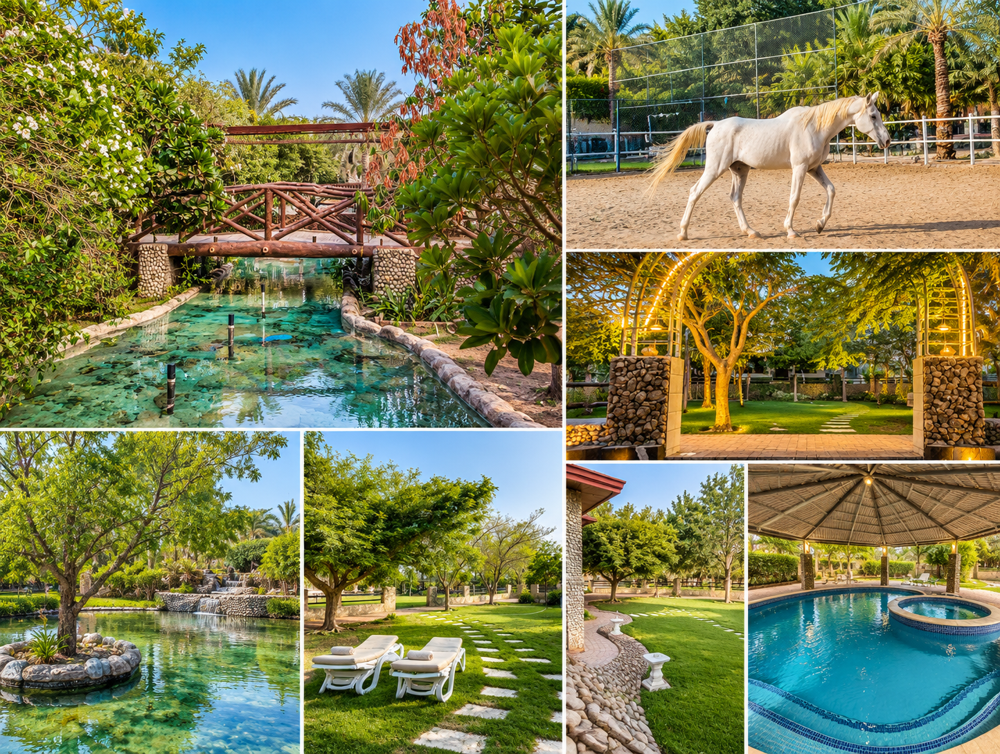
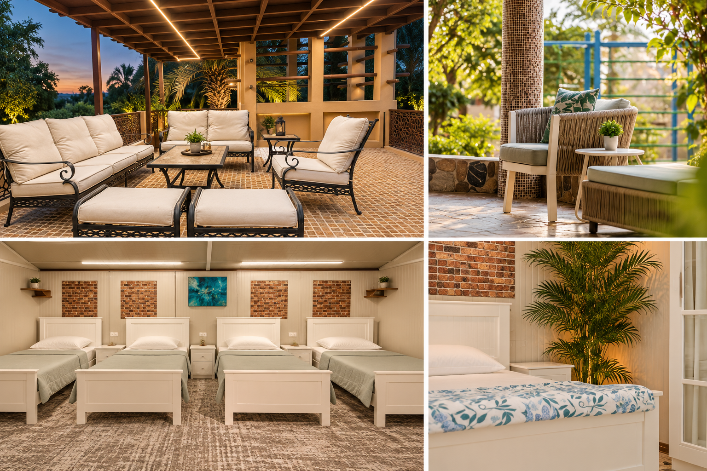
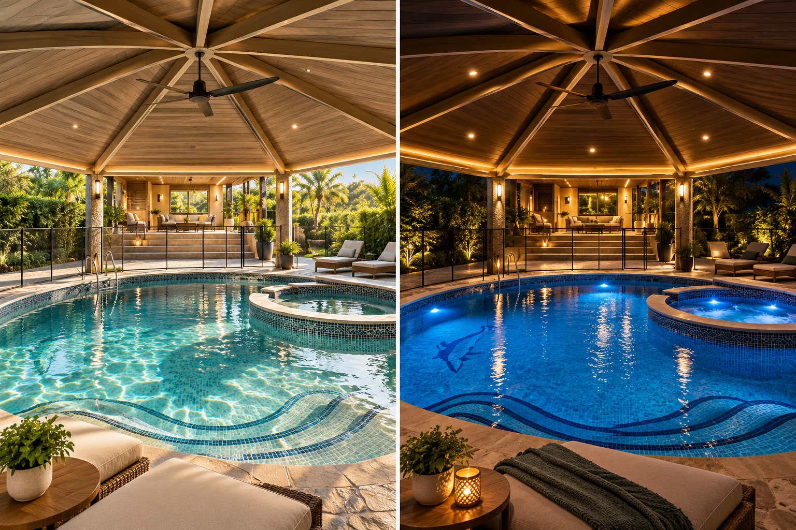
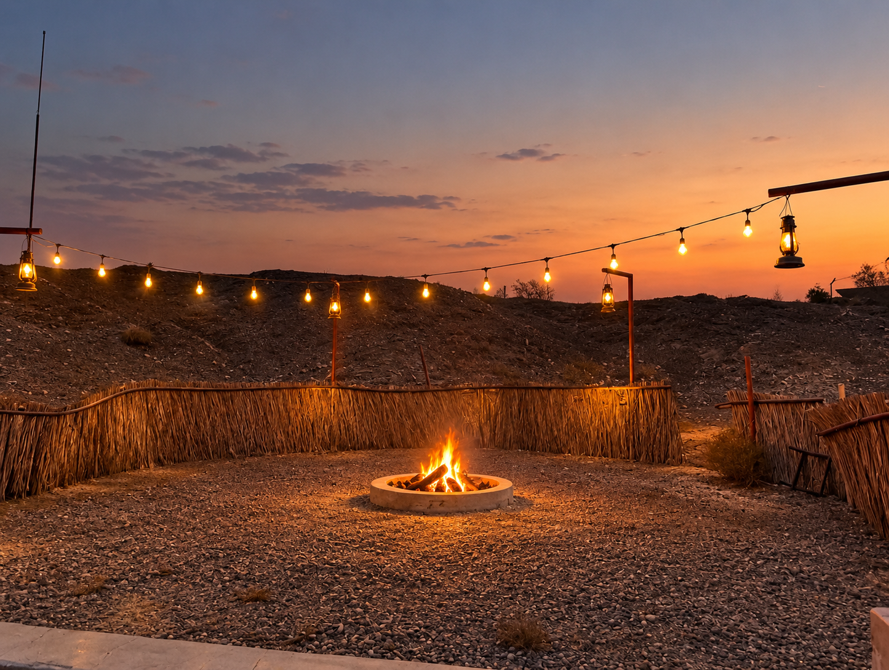
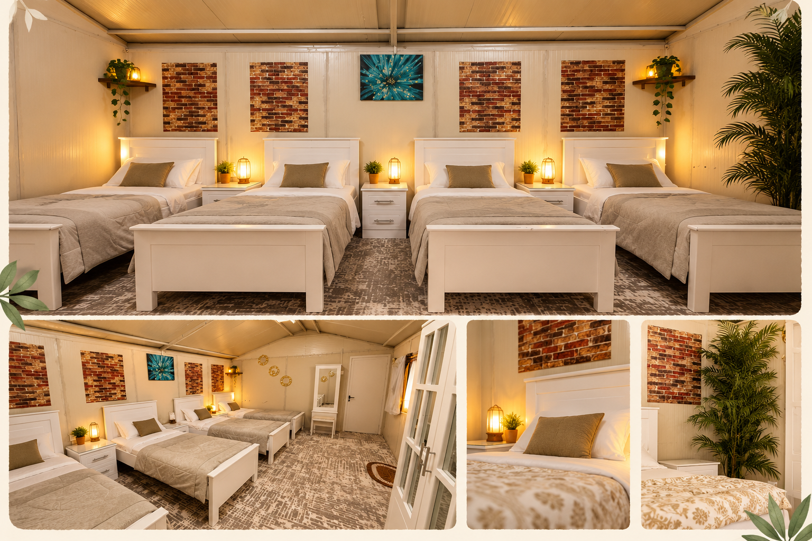
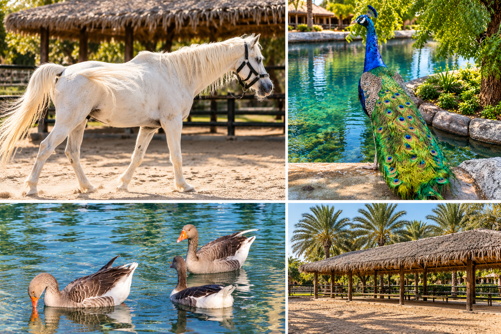

CHAPTER 04
The Wedding House
For one night, this whole place becomes ours.
Not a hall. Not a hotel. A whole wedding house — with gardens, open spaces, rooms, a pool and enough corners for two families to create their own beautiful chaos.

A house made for a celebration.
Green spaces, water, shaded corners and open-air gathering spots. Once everyone arrives, this becomes our wedding house.

Sit. Talk. Laugh. Repeat.
Between all the music and family chaos, there are quiet corners to sit together, catch up and simply enjoy the house.
BALCONY · LOUNGE · FAMILY HANGOUT

The pool changes after sunset.
Easy daytime energy turns into one of the liveliest parts of the staycation once the lights come on.

Where the night slows down.
Warm lights, open sky and a fire in the middle — a place for the conversations after the programme.
Yes, there is time to sleep. Maybe.
Shared rooms keep the staycation feeling alive even when the music stops. Rest, reset, get ready — or continue the late-night family talks.
SHARED ROOMS · REST · MORNING RESET


We have neighbours. 🐴
The property comes with a little extra character — horses, peacocks, birds and plenty of unexpected photo opportunities around the grounds.
It will feel like the place where our imaginary wedding actually happened.